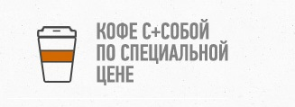

Кафе «СТП»
Как часто хочется в повседневной суете остановиться, задуматься, засмотреться, увидеть важное. Хорошо, что есть места, где можно замедлить ход времени, сбавить темп и насладиться… Одно из таких мест – кафе «СТП». Стоит пересечь ворота, и спешить уже некуда. Вошедший погружается в спокойную и непринуждённую атмосферу внутреннего дворика с национальным колоритом. А зайдя в помещение главного зала, забывает, что куда-то нужно было «срочно» успеть. Здесь нескучно: взгляд привлекают интересные детали интерьера, старинные предметы, украшавшие дома много десятилетий назад. Время в ожидании заказа пролетит незаметно. Вкус блюд тоже вполне знакомый, традиционный – такой вкусный борщ или румяные драники, свежую окрошку или сочную отбивную могла приготовить только любимая бабушка в детстве.
Время не стоит в стороне, и давние традиции отлично сочетаются с современностью. Барбекю-драйв, суши, пицца, шашлык – все это тоже здесь. Широкий комплекс услуг – обеденное меню, блюда на вынос, доставка блюд, вечернее времяпровождение, торжества, банкеты, детские праздники – привлекает внимание гостей с любыми запросами. Кухня кафе «СТП» включает в себя блюда, которые удовлетворят любой вкус. Какое блюдо Вы не закажете, можно быть уверенным, что приготовлено оно будет с любовью и заботой.
В теплое время года можно полюбоваться обстановкой внутреннего дворика кафе «Завалинка», сидя в приятной прохладе бревенчатой открытой беседки, которая сама по себе является произведением искусства. Развлекательная программа по выходным и праздникам тоже на любой вкус – от народных песен и танцев до дискотеки.